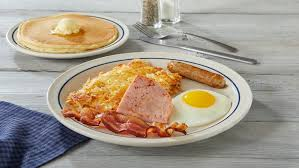

Breakfast Sandwich
This is my favorite dish from IHop the traditional diner breakfast
Simple yet delicious
Servings:
1Ingredients:
- 1 Cup of Frozen Hash Browns
- 2 Strips of Bacon
- 2 Link Sausages
- 2 Slices of Canadian Bacon
- 2 Eggs
Directions:
- Preheat a pan on the stove
- lay the ham, bacon and sauage
- cook till the meat has a desired texture
- cook eggs as you want. I like my eggs over hard
- in new pan, lightly oil then pan fry the frozen hash browns